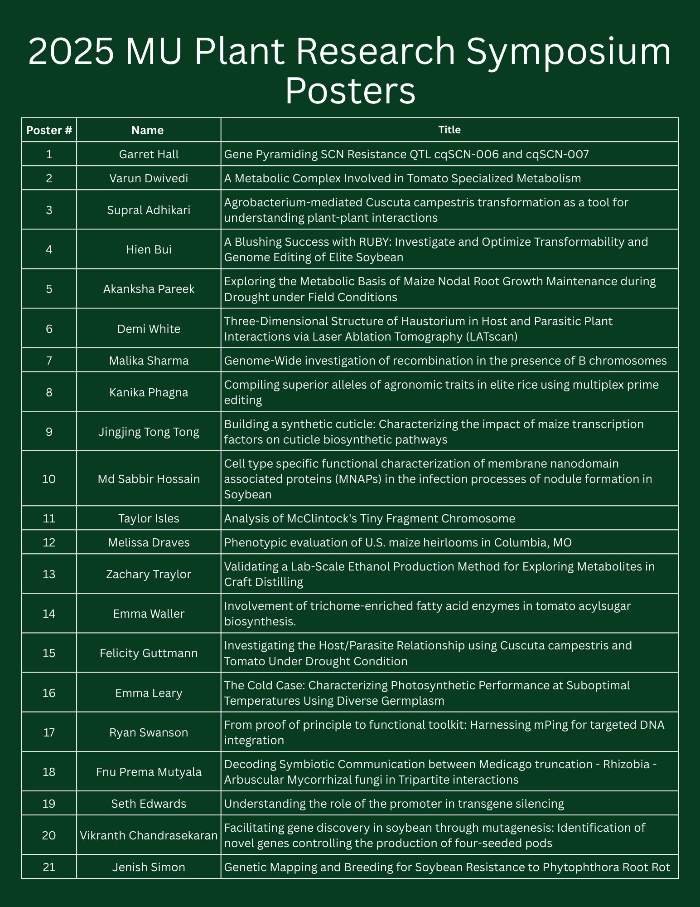

1. Gene Pyramiding SCN Resistance QTL cqSCN-006 and cqSCN-007
Presenter: Garret Hall
Soybean cyst nematode (SCN; Heterodera glycines), a plant-parasitic roundworm, is a major threat to soybean (Glycine max) production, causing significant yield losses worldwide. Overreliance on PI88788-type resistance containing rhg1-b, has led to a widespread shift in SCN virulence, enabling nematode reproduction on many resistant cultivars. To address this challenge, it is critical to explore alternative sources of resistance, particularly polygenic resistance strategies, and evaluate their effectiveness against virulent SCN HG types. This study investigates pyramiding cqSCN-006 (GmSNAP15) and cqSCN-007 with the rhg1-a, rhg2 (GmSNAP11), Rhg4 (GmSHMT08), and GmSNAP14 resistance genes. Two populations of F3:4 derived soybean lines with varying combinations of homozygous resistance alleles were developed via marker-assisted selection and are currently being screened for resistance against SCN isolates TN7 (HG type 2.5.7; Race 1), TN22 (HG type 1.2.5.7; Race 2), PA3 (HG type 7; Race 3), and PA14 (HG type 1.3.5.6.7; Race 14). Unique KASP™ markers flanking cqSCN-007 were developed to ensure selection of the causal gene in this region. Five replicated seedlings per line were each planted in different micro-pots and arranged in a randomized complete block design. Resistance will be evaluated by calculating female index (FI) scores using Williams 82 as a susceptible control. Female index scores will be analyzed across gene combinations using ANOVA to assess potential interactions between resistance alleles. Tukey’s HSD test will also be applied to identify significant pairwise differences in FI among gene combinations. This research will provide insight into the effectiveness of alternative resistance gene combinations and the potential for polygenic resistance strategies to mitigate SCN virulence and sustain soybean production. Future directions include evaluating the agronomic performance of experimental lines containing cqSCN-006 and cqSCN-007 and utilizing identified cqSCN-007 recombinants for fine-mapping.
2. A Metabolic Complex Involved in Tomato Specialized Metabolism
Presenter: Varun Dwivedi
Specialized metabolites mediate diverse plant-environment interactions. Although, recent work has begun toenzymatically characterize entire plant specialized metabolic pathways, little is known about how different pathway components organize and interact within the cell. Here we use acylsugars - a class of specialized metabolites found across the Solanaceae family – as a model to explore cellular localization and complex formation of pathwayenzymes. These compounds consist of a sugar core decorated with acyl groups, which are connected through esterlinkages. To elucidate the spatial organization and interactions of tomato ASATs, we expressed SlASAT1-4 proteinsfused with YFP in N. benthamiana and Arabidopsis protoplasts. Our findings revealed a distributed ASAT pathwaywith SlASAT1 and SlASAT3 localized to the mitochondria, SlASAT2 localized to the cytoplasm and nucleus, andSlASAT4 localized to the endoplasmic reticulum. To explore potential pairwise protein-protein interactions in acylsugarbiosynthesis, we used various techniques, including co-immunoprecipitation, split luciferase assays, and bimolecularfluorescence complementation. These complementary approaches based on different interaction principles alldemonstrated interactions among the different SlASAT pairs. Following transient expression of SlASAT1-4 in N.benthamiana, we were able to pull down a complex consisting of SlASAT1-4, which was confirmed throughproteomics. Size-exclusion chromatography of the SlASAT complex followed by proteomics suggests that the SlASATcomplex consists of at least one of each ASAT and perhaps other proteins involved in this interaction network. Thisstudy sheds light on the metabolic coordination for acylsugar biosynthesis through formation of an interaction networkof four sequential steps coordinating efficient production of plant chemical defenses.
3. Agrobacterium-mediated Cuscuta campestris transformation as a tool for understanding plant-plant interactions
Presenter: Supral Adhikari
Cuscuta campestris, a stem parasitic plant, has served as a valuable model plant for the exploration of plant-plant interactions and molecular trafficking. However, a major barrier to C. campestris research is that a method to generate stable transgenic plants has not yet been developed. Here, we describe the development of a Cuscuta transformation protocol using various reporter genes (GFP, GUS, or RUBY) and morphogenic genes (CcWUS2 and CcGRF/GIF), ultimately leading to a robust protocol for Agrobacterium-mediated C. campestris transformation. The stably transformed and regenerated RUBY C. campestris plants produced haustoria, the signature organ of parasitic plants, and these were functional in forming host attachments. Transformed C. campestris also produced flowers and transgenic seeds exhibiting betalain pigment, providing proof of germline transmission of the RUBY transgene. The integration locations of T-DNAs were confirmed through TAIL-PCR. Furthermore, the RUBY reporter is not only a useful selectable marker for the Agrobacterium-mediated transformation but also provides insight into the movement of molecules from C. campestris to the host during parasitism. Thus, the protocol to generate transgenic C. campestris reported here overcomes a major obstacle to Cuscuta research and opens up new possibilities for studying parasitic plant interactions.
4. A Blushing Success with RUBY: Investigate and Optimize Transformability and Genome Editing of Elite Soybean
Presenter: Hien Bui
Soybean (Glycine max L. Merr.) transformation continues to pose a bottleneck in efficient genome editing and crop improvement, primarily due to its low transformation efficiency and genotype-dependent recalcitrance. The RUBY reporter has developed as a nondestructive and effective tool for screening transgenic explants without requiring specialized equipment. In this study, we utilized RUBY to optimize the protocol of Agrobacterium tumefaciens-mediated soybean half-cotyledon transformation. We tested various conditions among inoculation and co-cultivation media including pH, inoculation duration, and strains of Agrobacterium. Of all conditions tested, only a change in pH yielded significant improvement. We used a pH range of 5.0 to 5.8 and found that 5.6 has the highest transient transformation rate, with 100% of explants strongly expressing RUBY in the nodal region after five days. We then evaluated adjusting the co-cultivation pH to 5.6 in twelve elite soybean cultivars. Results show that most cultivars are transformable, except two cultivars. Subsequently, we selected high-yield and high-protein elite cultivars for gene editing experimentation with our improved CRISPR/Cas9 system. Because of soybean’s value as a source of oil, we focus on the key oil composition genes FAD2-1A and FAD2-1B, ideal targets with readily available resources and ease of evaluation. We used CRISPR/Cas9 with the aforementioned optimized transformation protocol, and successfully edited of both FAD2-1A and FAD2-1B in the T1 generation of two elite cultivars, with homozygous lines identified in the T2 generation. The edits resulted in a significant increase in the preferred oil type, oleic acid, from approximately 20% to 85% and a decrease in the undesirable linoleic acid from around 50% to less than 1%. Our improvement in oil composition contributes to the nutrition enhancement and oxidative stability of soybean oil. The increased oleic acid content in the already high-yield and high-protein elite cultivars increases soy value significantly. This research demonstrates the utility of both optimized transformation protocol aided by RUBY and improved CRISPR system to successfully reduce the bottleneck in soybean improvement.
5. Exploring the Metabolic Basis of Maize Nodal Root Growth Maintenance during Drought under Field Conditions
Presenter: Akanksha Pareek
Drought significantly hampers global crop production, impacting maize yields. The relative maintenance of root growth is one of the prominent plant adaptations to water deficits, enabling access to water in deeper soil profiles. In maize, nodal roots emerge from the stem base to form the framework of the mature root system. Nodal roots have the ability to penetrate through dry soils, yet the underlying mechanisms that facilitate growth maintenance during drought conditions in the field have not been investigated. In this study, we examined the physiological and metabolic responses of nodal roots under irrigated and soil-drying conditions in the field. At low soil water potentials, the maize genotype B73 maintained elongation rates in the apical 3 mm of the growth zone, and the nodal root growth zone was around 5 mm compared to 10 mm in well-watered conditions. Metabolite profiling and pathway analysis performed with the apical and basal regions of the nodal root growth zones from whorls 2 and 5 revealed alterations in proline and glutathione metabolism as common stress responses. The significance of these pathways in water stress responses is well established, and their cooccurrence in nodal roots in the field demonstrates the congruence of results from lab and field studies. In addition, we compared the nodal root growth responses in B73 with genotype FR697, which has a superior ability for root growth maintenance under water deficits. We found that glycerophospholipid metabolism was differentially modified in the two genotypes, indicating that the membrane lipid remodeling process is likely important for maintaining nodal root growth under water deficit conditions. Collectively, our results show region-specific changes in metabolites and growth in maize nodal roots and improve our understanding of maize nodal root growth maintenance in dry soils under field conditions.
6. Three-Dimensional Structure of Haustorium in Host and Parasitic Plant Interactions via Laser Ablation Tomography (LATscan)
Presenter: Demi White
Cuscuta spp. use haustoria to draw water and nutrients from host plant vascular systems and serve as a model for stem parasitic plants and haustoria development. Traditional techniques used to study the internal host-parasite interface are slow and tedious to assess, therefore the utility of an alternative technique, Laser Ablation Tomography or LATscan technology, was explored in this study. LATscan technology was demonstrated to be a useful and efficient tool to study tissue structure in parasitic plant interactions.
7. Genome-Wide investigation of recombination in the presence of B chromosomes
Presenter: Malika Sharma
B chromosomes (B) are supernumerary, dispensable chromosomes found in many species, including maize. Although not essential for development, B chromosomes have cytologically and genetically been shown to increase the rate of meiotic recombination, particularly in heterochromatic regions, indicating that they are not biologically inert. This study investigates the effect of B chromosomes on the maize genome across six BC1 populations. They are reciprocal crosses of (B73/W22 0B) X B73, (B73/W22 2-3B) X B73, and (B73/W22 6B) X B73. We aim to know whether the genome-wide crossover distributions are affected by the presence of B chromosomes, whether higher B chromosome number has a stronger effect than the lower B copy, whether B chromosomes affect interference, and whether this chromosome preferentially affects different regions of the genome such as heterochromatin. Through this analysis, we will identify genetic variants and chromosomal regions where crossover frequencies vary with the presence of B chromosomes. This work provides insight into the role of B chromosomes in influencing recombination and shaping the genomic landscape of maize.
8. Compiling superior alleles of agronomic traits in elite rice using multiplex prime editing
Presenter: Kanika Phagna
Traditional breeding and CRISPR/Cas9 genome editing have improved crops but struggled to efficiently modify multiple genes at once while avoiding unintended changes. Prime editing (PE), an advanced genome editing technology, enables precise DNA modifications without introducing double-strand breaks, reducing the risk of unintended mutations. Over the years, remarkable progress has been made in enhancing PE efficiency in plants. This advance has now paved the way for efficient multigene targeting, a breakthrough that we demonstrate in this study. Although the prospect of multiplex PE has been demonstrated in wheat for up to eight genes and in rice for up to four genes, this study focuses on developing and optimizing a multiplex PE system for elite rice varieties. We have selected key agronomic traits and aim to establish a system capable of editing up to 16 genes in combinations of 4, 8, 12, and 16 genes. To assess construct stability, we performed transformation and sequencing in E. coli, A. tumefaciens, and rice plants. Out of 174 transformed plants, 138 carried the PE cassettes, achieving a transformation efficiency of 79.31%. Further screening is underway to evaluate the efficiency of simultaneous multigene editing. Future studies will evaluate the editing efficiency and heritability of modifications, ensuring stable transmission across generations. Additionally, phenotypic assessments will be conducted for selected traits to validate the functional impact of these edits. Ultimately, this approach will push the boundaries of genome editing for crop improvement.
9. Building a synthetic cuticle: Characterizing the impact of maize transcription factors on cuticle biosynthetic pathways
Presenter: Jingjing Tong Tong
The plant cuticle is a hydrophobic layer covering the surface of most aboveground tissues, which prevents evaporation of water and penetration of pollutants, meanwhile, it also protects the plants against UV light radiation, heat, mechanical and chemical damage by various pathogens. In most land plant species, cuticles are composed of two major lipid components: cutin and cuticular wax. The biosynthesis of the cuticle can be broken down into five regulatory modules, including fatty acid elongation, cutin monomer synthesis, decarbonylative and reductive modules within cuticular wax biosynthesis, and transport. We have identified candidate transcription factors (TFs) through multi-omics approaches whose expression levels are associated with cuticle composition. We then characterized these TFs using the TARGET (Transient Assay Reporting Genome-wide Effects of Transcription factors) approach in maize and Arabidopsis root protoplasts. Roots provide an ideal experimental system for studying cuticle regulation, as they naturally lack a cuticle during most developmental stages; thus any cuticle production is attributable to the gene expression induced by heterologously expressed candidate TFs. Reverse-transcriptase quantitative PCR (RT-qPCR) was used to evaluate the downstream expression of cuticle genes in each regulatory module after TF induction. Our results show that maize TFs can regulate the homologous cuticle-related genes in Arabidopsis root protoplasts. Using this approach, we’ve shown that both previously reported cuticle TFs and TFs not previously reported to be involved in cuticle formation can activate genes involved in cuticular wax biosynthesis. The validated TFs are now being expressed in stable Arabidopsis transgenic lines to further elucidate their functional roles in cuticle formation.
10. Cell type specific functional characterization of membrane nanodomain associated proteins (MNAPs) in the infection processes of nodule formation in Soybean
Presenter: Md Sabbir Hossain
Legumes have the unique ability to fix atmospheric dinitrogen through a mutualistic symbiosis with rhizobia. This symbiosis starts with the infection of the legume root hair cell and ultimately leads to the development of a new root organ, the nodule. The rearrangement of the plasma membrane is a pre-requirement for rhizobial infection. For instance, several membrane nanodomain-associated proteins (MNAPs), including FW2.2-LIKEs (FWLs), flotillins (FLOTs), prohibitins (PHBs), and remorins (REMs), play a crucial role in this symbiosis. In this poster, to precisely analyze the expression patterns of MNAPs in Glycine max and Medicago truncatula nodules, we used state-of-the-art single-cell transcriptomics technology. This approach helped us to evaluate the co-expression pattern of the MNAPs in each cell type composing the G. max and M. truncatula nodules. As a result, we identified two GmFWLs, one GmFLOT, two GmPHBs, and three GmREMs, and, and two MtFWLs, two MtFLOTs, three MtPHBs, and one MtREM genes preferentially expressed in rhizobia- infected cells in the nodules. Expanding our analysis to the entire soybean single-cell transcriptomic atlas, we confirmed the specific co-expression of these eight soybean MNAPs in the infected cells of the nodule. The phylogenetic analysis of the legume MNAPs revealed that most of the nodule-infected cell-specific MNAPs belong to the same sub-clades suggesting that the role of these MNAPs in controlling nodulation occurred before legume speciation. To test this hypothesis, we are conducting a cell type-specific functional characterization to elucidate how these MNAPs are interacting with each other to contribute to the nodulation processes.
11. Analysis of McClintock's Tiny Fragment Chromosome
Presenter: Taylor Isles
In 1978 McClintock described a fragment chromosome that could rearrange itself as well as become inserted into or attached to other chromosomes. McClintock attributed this to an “X component” on the fragment chromosome. She later produced a much-reduced version called “tiny fragment”. This chromosome contained a centromere, near which she mapped the X component, attached to a short section of chromosome arm 9S. The marker genes Shrunken1 and Bronze1 could show evidence of loss, presumably by the failure of tiny fragment to be included in a developmental lineage. However, kernels were also observed that indicated a loss of function of either Sh1 or Bz1 alone. McClintock noted that many cases of Bz1 mosaicism were typical of a silenced state with activation in small sectors in the endosperm and that these patterns could occur in clusters. We confirm all the observations of McClintock regarding kernel expression of Sh1 and Bz1 including evidence for some clusters exhibiting bz1->Bz1 patterns. Derivatives have been recovered that have much higher meiotic transmission than the usual low frequency with some exhibiting Mendelian ratios as if tiny fragment were attached or inserted into another chromosome. One derivative shows a mosaic phenotype for Bz1 through 15 generations of perpetuation. Whole chromosome paints show tiny fragment is composed solely of material from chromosome 9. It does contain a weak representation of CentC, suggesting that it has a native centromere. There are no detectable representations of 180 or TR1 knob repeats. Mapping read numbers along the length of the chromosomes from plants with tiny fragment compared to siblings without it suggests that tiny fragment contains 46 genes over approximately 2-3 Mb. Sequencing and whole chromosome paint technologies not available in McClintock’s era should provide insight into the action of the “X component” to reorganize the genome.
12. Phenotypic evaluation of U.S. maize heirlooms in Columbia, MO
Presenter: Melissa Draves
Hybrid maize is the most productive crop in the United States, producing millions of bushels per year and is used for food, feed, and fuel production. Prior to maize hybrids, open-pollinated heirloom populations (landraces) were primarily used in the US for subsistence farming and livestock feed. Heirlooms are phenotypically and genotypically diverse, with many populations harboring unique alleles that are not observed in the modern germplasm pool due to the rapid selection for yield that drove hybrid production. However, heirlooms are relevant in specialty markets as many chefs, organic farmers, and smallholder growers are interested in marketing heirlooms as a natural culinary product. Outside of the United States, heirlooms have been intensively studied, with extensive monographs written about populations from Mexico, South America, and Europe. However, there are no comprehensive datasets on extant heirlooms from the United States. This study aims to fully phenotype 990 heirlooms, primarily housed at the North Central Regional Plant Introduction Station. Heirlooms were planted in a partially replicated design in the summer of 2024 in Columbia, MO and Clayton, NC. Manual phenotypic measurements including flowering time, leaf and tassel architecture, plant heights, ear disease, tillering data, and harvest traits were collected throughout the growing season. Unmanned aerial vehicles were flown each week to collect standardized images of the field, which will be used to extract whole plot traits including plant health and height. Preliminary analysis indicates that cluster analysis and summary statistics represent the variation between and within populations and provide insights into heirloom phenotypic relationships. Ongoing efforts include a repeated field trial in 2025, an automated ear and kernel imaging pipeline, and kernel composition analyses using near infrared spectroscopy. Ultimately, this project will produce a comprehensive, public data set that will fully describe heirloom populations and their potential use for novel culinary traits.
13. Validating a Lab-Scale Ethanol Production Method for Exploring Metabolites in Craft Distilling
Presenter: Zachary Traylor
Maize diversity has become a prominent research area to incorporate novel alleles not currently available in elite inbreds. One source of maize diversity we could leverage is heirlooms/landraces which are locally adapted populations grown before the development of inbreds and hybrids. With new biochemical and genomic tools, we can study new traits to improve maize using heirlooms, such as improving its nutritional quality, or making populations better suited for food products rather than for feed or fuel. Specifically, we aim to optimize maize for the whiskey industry by producing metabolically unique lines from heirlooms that offer new flavor profiles not currently available in commercial germplasm. To do this, we are conducting a QTL analysis to find genomic regions associated with specific metabolites connected to flavor. But first, we need to establish a high-throughput method for converting the heirloom grain into ethanol. Current methods in the literature outline ways to convert starch to ethanol using a multitude of grains in low quantities, but none have been described for the dry grind method using maize in the American whiskey industry. Here we developed a method to efficiently produce whiskey using less than 100 grams of maize and have validated this method using spectrophotometric and molecular quantifications of ethanol and sugar. This platform will allow us to conduct our QTL studies with maize heirlooms and map traits associated with flavor.
14. Involvement of trichome-enriched fatty acid enzymes in tomato acylsugar biosynthesis.
Presenter: Emma Waller
Plants have developed diverse specialized chemicals to aid in tolerating abiotic and biotic stresses, yet many of the metabolic pathways for these active metabolites are unknown. My project is focused on studying the specialized metabolites utilized in the pathway involving the secretion of compounds know commonly as acylsugars. Acylsugars are compounds made up of a sugar core, such as sucrose or glucose, with an aliphatic acyl group esterified to the hydroxyl groups on the sugar. They are widely found in the Solanaceae family, which includes horticulturally and agriculturally important plants such as tomato, pepper, tobacco, potato, etc. Acylsugars are often secreted onto the surface of the plant tissue through small, hairlike structures known as glandular trichomes. Trichomes are essential in responding to stressors and defending the plant. Although some parts of acylsugar biosynthesis have been characterized, such as the attachment of acyl chains to the sugar core, how the acyl chains are biosynthesized and elongated remain relatively unknown. We hypothesize that acyl chains are elongated by trichome-enriched β-Ketoacyl-ACP synthase (KAS) enzyme. This enzyme typically synthesizes fatty acids but may also contribute to acyl sugar biosynthesis. I have been focused on investigating the function of the KAS enzyme within the model plant Solanum lycopersicum and its responsibility in plant function, trichome morphology, and acylsugar accumulation. To do this we observed three chosen genes within the KAS enzyme family (Solyc08g082620, Solyc12g009260, Solyc08g006560) that have been altered using CRISPR-Cas9 gene editing. From tissues samples taken at various life stages we were able to genotype each plant to determine any differences in characteristics based on genetic information, in addition to determining acylsugar and fatty acid profiles through gas chromatography mass spectrometry (GCMS) The same tissue samples were analyzed to determine trichome morphology per plant as well. The information gained from the biosynthetic pathway of acyl sugars can help to innovate the biochemical engineering field for improved agricultural sustainability.
15. Investigating the Host/Parasite Relationship using Cuscuta campestris and Tomato Under Drought Condition
Presenter: Felicity Guttmann
Cuscuta campestris is a stem parasitic plant that takes water and nutrients from the host, leading to a significant reduction in crop yield, particularly in crops like tomatoes. The negative impact of parasitism can become even more pronounced when the host also experiences abiotic stress. In this study, we examined tomatoes exposed to four varied growth conditions to analyze the physiological responses of tomato hosts facing parasitism and drought conditions. These conditions included well-watered without Cuscuta (WW-C), well-watered with Cuscuta (WW+C), drought without Cuscuta (D-C), and drought with Cuscuta (D+C). Physiological data, including host leaf water potential (LWP), fresh weights, and dry weights, were collected to gauge the degree of stress in each treatment group. The most notable difference between treatments was LWP. LWPs for WW-C and WW+C treatment groups indicated high water availability. Drought-treated plants had LWP values indicating low water availability. Interestingly, the D-C LWPs exceeded the D+C LWPs, suggesting higher stress levels in a drought condition without Cuscuta than a drought condition with Cuscuta. D+C hosts were expected to experience greater stress, but physiological results seem to contradict this assumption. This raises questions about water retention under parasitism, as well as mobile genes between Cuscuta and hosts.
16. The Cold Case: Characterizing Photosynthetic Performance at Suboptimal Temperatures Using Diverse Germplasm
Presenter: Emma Leary
Nitrogen (N) availability in the soil accelerates in the spring as warming soil facilitates renewed microbial activity, whereas the demand for nitrogen by maize peaks later in the summer. This delay between peak nitrogen availability and plant uptake causes a substantial period of time during which soil N is not utilized for plant nutrition but is instead lost through N2O emissions, runoff, and leaching. Some of this N loss could be prevented by beginning the maize growing season earlier in the spring. Moving the growing season forward, however, means growing the plants at colder spring-time temperatures. This can be problematic for maize because its photosynthetic capacity declines under lower temperatures. Maize contains incredible genetic diversity and has been adapted to high elevations with low temperatures offering promise for the existence of cold tolerant photosynthetic traits. Identifying these variations could improve modern maize and, along with frost tolerance, enable earlier planting. This project seeks to discover the genetic and physiological mechanisms that influence photosynthetic performance under cold conditions. We have begun screening for germplasm that exhibits healthy photosynthesis at cold temperatures across maize genotypes, landraces, and wild relatives. Transgenic lines with changes in photosynthesis related pathways are also in development. Screening is being conducted in controlled environment chambers to simulate the cool conditions of an early spring midwest planting. Photosynthetic performance is being assessed using a Li-Cor 6800 and manual phenotyping. Preliminary results to date have identified promising germplasm for further experimentation and breeding. Ultimately, this project seeks to identify important cold tolerance traits and germplasm for introduction into modern maize breeding programs, expanding the potential growing seasons and regions for North American maize production.
17. From proof of principle to functional toolkit: Harnessing mPing for targeted DNA integration
Presenter: Ryan Swanson
Plant transgenesis offers a powerful tool for the introduction of beneficial traits into plants. Despite challenges with recalcitrant species, the technologies which facilitate the introduction and expression of transgenes in plants have never been more efficient or widely accessible. However, the process of transgenesis is not without its weaknesses. Current methods, like Agrobacterium-mediated transformation or biolistic bombardment, integrate transgenes at random locations across the genome. The random nature of these integrations can drastically affect the stability and expression patterns of delivered transgenes. Therefore, the development of a DNA insertion system that can be targeted to specific genomic locations is aggressively sought after by academics and industry alike. DNA transposons offer an appealing approach for targeted DNA insertion in plants. These transposable elements can cleanly excise and integrate their target DNA sequence while protecting the sequence from degradation as it is mobilized. Several systems connecting transposon and Cas9 activity have been engineered for targeted DNA integration in both bacterial and mammalian systems, with highly efficient targeted insertion achieved in human cell lines using a fusion of Piggybac and Cas9. The Slotkin Lab has demonstrated the first such system in plants, known as Transposase-Assisted Target Site Integration (TATSI). This system targets the integration of the rice transposable element mPing to a DSB made by Cas9 and achieves this targeted integration at a rate far higher than comparable technologies in plants. This system has been demonstrated in both the model plant Arabidopsis Thaliana and in Soybean, showcasing its value as a genome editing tool in crops. In this study, the capabilities of TATSI are improved and expanded upon in several ways. To date, TATSI has been demonstrated in a proof-of-principle context, typically mobilizing the base element or small cargoes like resistance genes. The upper limit on how much DNA cargo can be mobilized and delivered to a target site has yet to be determined. This study details the targeted integration of cargoes up to 14kb and shows that variations in the system’s components can improve the rate of this integration. Beyond increasing the size of delivered cargoes, this study demonstrated practical applications for this efficient targeted insertion technique, ranging from modulating endogenous gene expression to inserting epitope tags into endogenous gene sequences. This work showcases the strength of TATSI as a tool for genome engineering, positioning it as a critical resource for the generation of tomorrow’s crops.
18. Decoding Symbiotic Communication between Medicago truncation - Rhizobia - Arbuscular Mycorrhizal fungi in Tripartite interactions
Presenter: Fnu Prema Mutyala
When plants are colonized simultaneously by two different mutualistic partners, understanding carbon reallocation by plants between these partners is crucial when both symbionts provide the same nutrient for maximizing symbiotic efficiency. Here, we preform time course experiment to determine the dynamics of carbon allocation by Medicago truncatula to arbuscular mycorrhizal fungi (AMF), Rhizophagus irregularis DAOM197198, and rhizobia, Sinorhizobium meliloti when AMF has access to exogenous nitrogen, 15NH4Cl. Our findings suggest that arbuscular mycorrhizal fungi provides significantly higher amount of nitrogen to the plant when compared to the non-mycorrhizal plants which increases continuously over days. These findings will provide valuable information on how to improve plant-microbe interactions enhancing nutrient use efficiency by plants leading to increased plant productivity.
19. Understanding the role of the promoter in transgene silencing
Presenter: Seth Edwards
In plants, transgenesis, or introduction of DNA from one organism and adding it to the genome of another organism, is a major contributor to accelerated crop improvement worldwide. One major hindrance towards transgenic crop improvement is the phenomenon of transgene silencing. Transgene silencing can be as extreme as having the entire delivered DNA turned “off” and not expressing the desired trait. Furthermore, transgene silencing impacts the durability of a trait and can occur spuriously, including immediately after transgenesis, later in development, or in future generations. Due to uncertainty of if or when transgene silencing will occur, tools and assays are needed to detect the possibility of less durable trait deliveries. Detection of transgene silencing is commonly identified by noticing that trait is not working as intended, but there has been increasing effort for decades to understand earlier and earlier identifiers of incoming silencing. Full, transcriptional silencing occurs at the chromatin level which involves condensation of chromatin through histone modifications. These histone modifications are informed directly through DNA methylation. Small interfering RNAs (siRNAs) are generated before DNA methylation and one of the functions of siRNAs is to initiate the first round of DNA methylation. Molecularly, it is known that the earliest robust identifier of transgene silencing is generation of siRNAs, but why these are generated are only understood for specific circumstances, for example, hairpin structure or antisense-RNA to existing endogenous transcripts. Moreover, it is unclear why certain transgenes silence and others do not. The most postulated stance is that an aberrant RNA, one that is “off-type” is generated from certain transgenes. In this study, several similar, gene-like transgenes were designed only differing in the non-protein coding regions of the upstream promoter and 5’ UTR of the transcript. These transgenes were studied in first-generation (T1) Arabidopsis thaliana. We found that other than just expression level of a transgene, the identity of the upstream promoter itself has an impact on the level of early transcriptional gene silencing. Using a recently developed long-read, enriched-sequencing method, we were able to use machine learning to help guide the understanding of key differences in the types of transcripts that are generated from transgenes that share the same predicted transcript. This enables us to test long-standing hypotheses on aberrant RNAs to determine the role of the promoter in early transgene silencing.
20. Facilitating gene discovery in soybean through mutagenesis: Identification of novel genes controlling the production of four-seeded pods
Presenter: Vikranth Chandrasekaran
The most important soybean agronomic trait targeted for crop improvement is increased yield, which can be achieved by increasing seed number and/or seed weight. Phenotypic screening of soybean fast neutron mutants identified a mutant line, designated MO27, that produced increased number of four-seeded pods (4-SP), producing ~30% 4-SPs per plant compared to ~4% in wildtype. Genetic mapping and co-segregation analyses showed that the 4-SP phenotype in MO27 is controlled by the additive effects of at least two alleles located in Chr02 and Chr06. Based on the functional annotations of the deleted genes, we hypothesized that deletions of GmGATA1 on Chr. 2 and GmULT1-3 and GmULT1-5 on chr.6 are the putative causative mutations underlying the 4-SP trait. These genes encode putative transcription factors. Knock-out deletions in these genes via CRISPR/Cas9 confirmed their role in controlling the number of seeds per pod in soybean, likely through the CLAVATA3 (CLV3)-WUSCHEL (WUS) signaling pathway that coordinates stem cell proliferation with differentiation in floral meristems. Knock-out mutations of orthologous genes in Arabidopsis and tomato resulted in increased production of locules in siliques and fruits, respectively, suggesting functional conservation of GmGATA1-1 and GmULT1 in plants.
21. Genetic Mapping and Breeding for Soybean Resistance to Phytophthora Root Rot
Presenter: Jenish Simon
Phytophthora root rot, caused by Phytophthora species, is a significant disease limiting soybean production globally. Among the causal agents, Phytophthora sojae is well-characterized, whereas Phytophthora sansomeana has emerged recently as an additional threat, with limited known genetic resistance in soybean cultivars. This research addresses the urgent need to identify and incorporate genetic resistance against P. sansomeana into soybean varieties. In previous screening studies, we identified soybean lines demonstrating substantial resistance to P. sansomeana. In December, to further characterize and utilize these promising genetic sources, selected resistant lines were sent to a winter nursery in Costa Rica for controlled crossing and rapid generational advancement. These lines are expected to return by 2027 for subsequent resistance screening using the hypocotyl inoculation method, a standardized approach widely accepted for evaluating Phytophthora resistance. A key component of this project involves mapping genetic resistance loci, mainly focusing on the known resistance gene Rps11, which confers resistance to P. sojae. Interestingly, our preliminary data indicate that Rps11 also confers resistance to P. sansomeana, an observation warranting further genetic investigation. Typically, resistance to these two species has been understood to be controlled by distinct gene sets. Our findings challenge this notion, suggesting the potential broader-spectrum efficacy of specific resistance genes. To clarify whether resistance to both Phytophthora species is controlled by the same gene or by tightly linked genes within the resistant soybean line, we initiated specific crosses in October and are advancing the resulting F1 seeds in greenhouse conditions. This genetic characterization is crucial for future breeding efforts, enabling more targeted and effective incorporation of resistance traits into soybean cultivars. An additional practical goal of our research is to continuously evaluate and screen our most advanced soybean lines annually against a comprehensive set of diseases, including P. sansomeana. The objective is to systematically release superior soybean varieties that combine optimal yields with robust disease resistance packages. This strategic approach informs future crosses and breeding programs, providing the necessary genetic information to combine high-yield traits with enhanced resistance to emerging pathogens. Screening of these lines for resistance to P. sansomeana will commence this year, marking a significant step forward in our broader goal of developing soybean cultivars resilient to multiple Phytophthora threats. Ultimately, the outcomes of this project will deliver vital genetic resources and resistance mechanisms for soybean breeding programs, securing soybean productivity against the evolving threat posed by P. sansomeana.